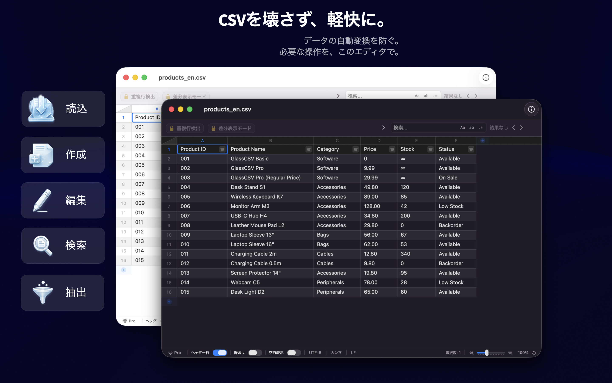
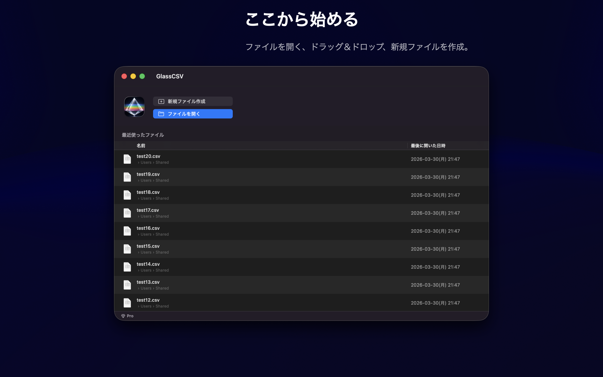
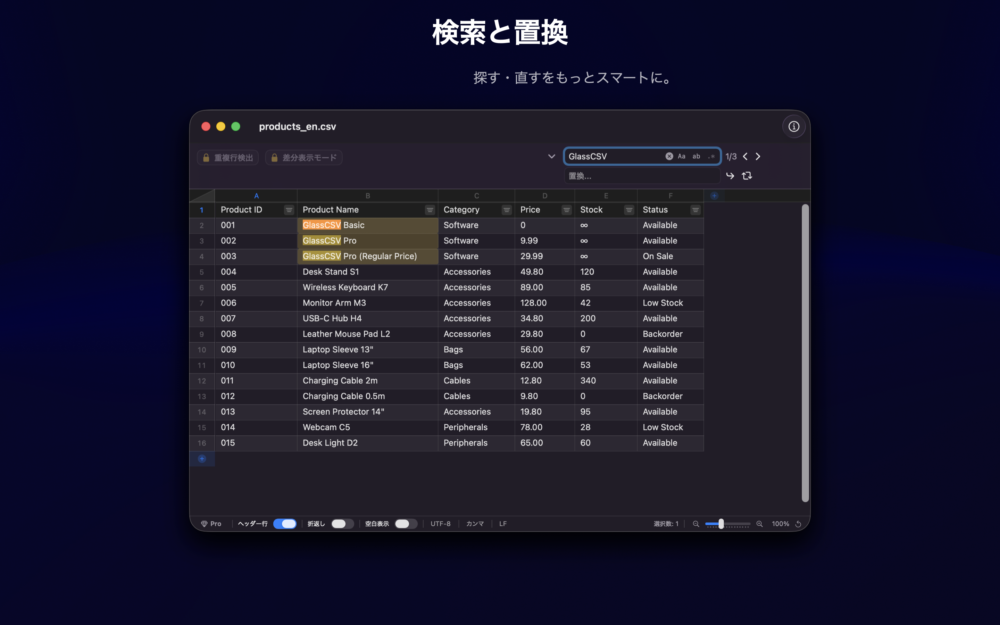
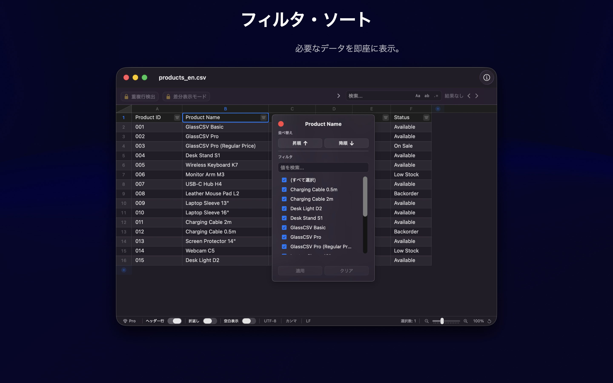
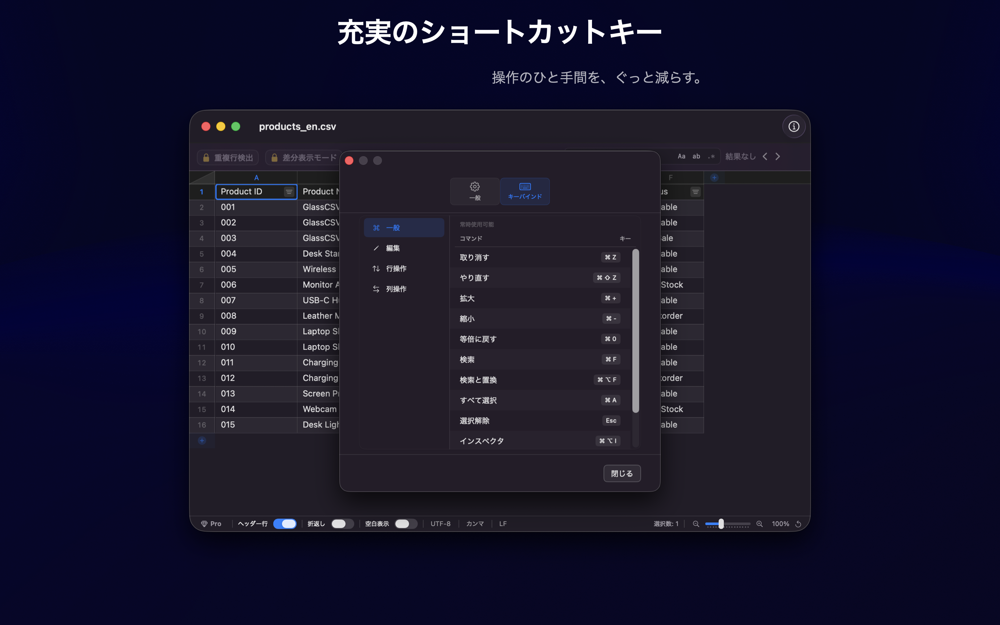
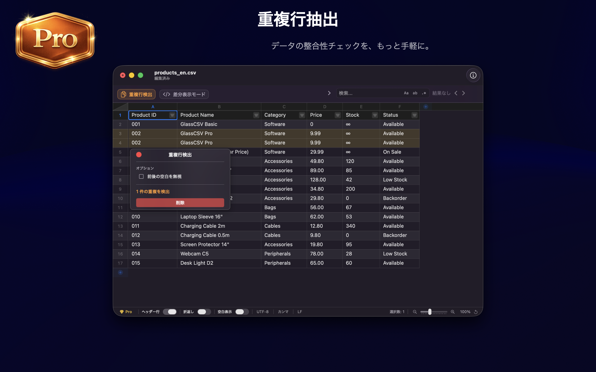
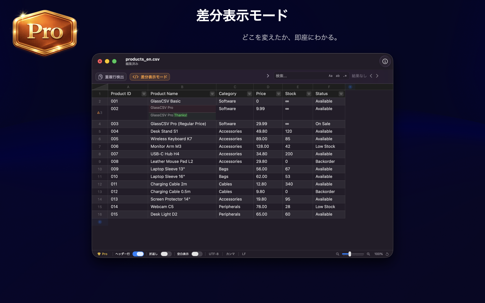
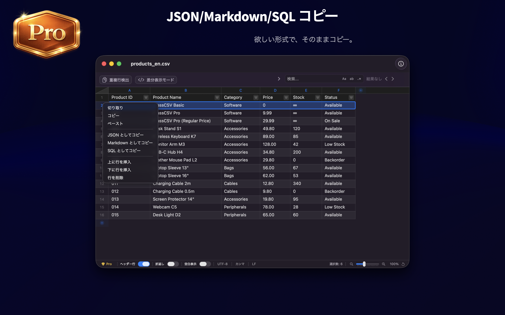

そのCSVファイル、
ガラスのように扱う。
意図しない自動変換やデータ破壊を防ぐ。
閲覧、検索、フィルタ、編集。業務に必要な操作を、この一本で。
macOSのために最適化された、プロフェッショナルCSVエディタ。
意図しない自動変換やデータ破壊を防ぐ。
閲覧、検索、フィルタ、編集。業務に必要な操作を、この一本で。
macOSのために最適化された、プロフェッショナルCSVエディタ。









型変換による0落ちや日付の自動変更を防止。「001」を「1」に変えることなく、データのありのままを「文字」として忠実に保持します。
Swift6とAppKitを駆使したネイティブ設計。巨大なファイルも待たせることなく、常に軽快なレスポンスで表示・検索が可能です。
閲覧、検索、フィルタ、そして編集。CSV操作に必要な基本機能をすべて網羅。日々の業務をこのアプリ一本でスムーズに完結させます。
一度の購入で、将来のアップデートを含めたすべての機能を利用できます。
ダウンロードは無料です。Pro機能はアプリ内から購入できます。